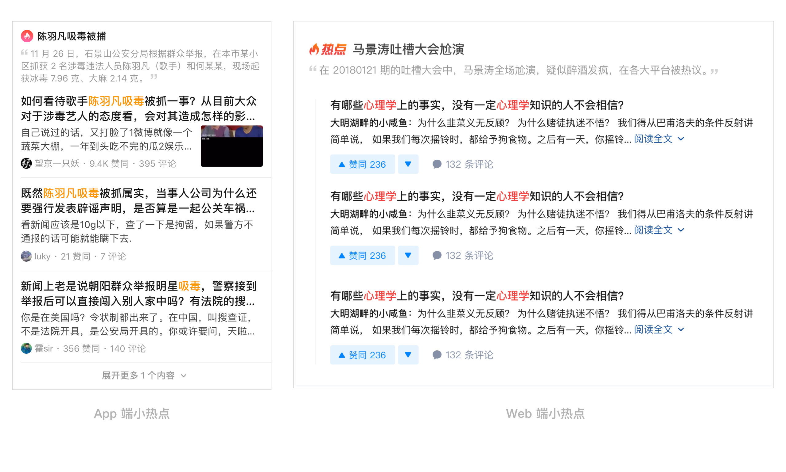
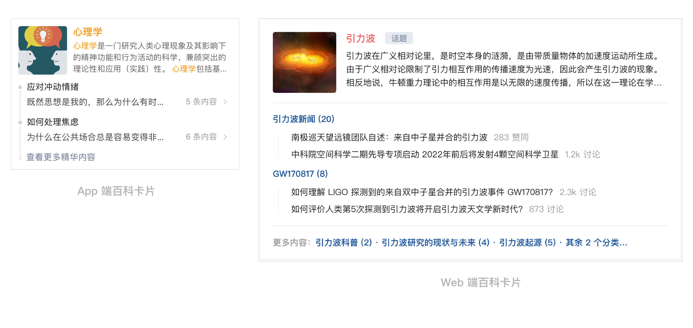
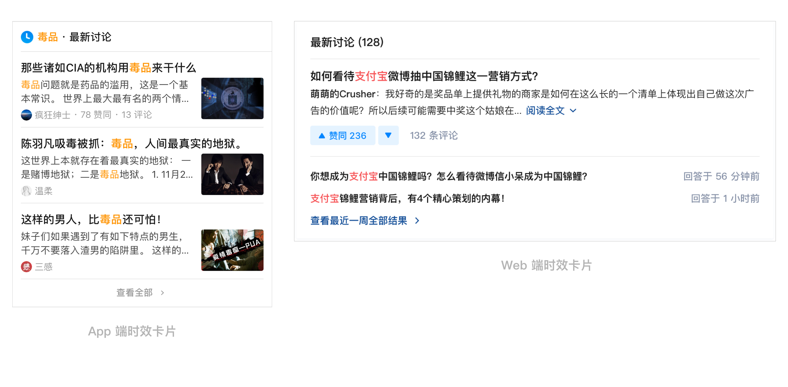
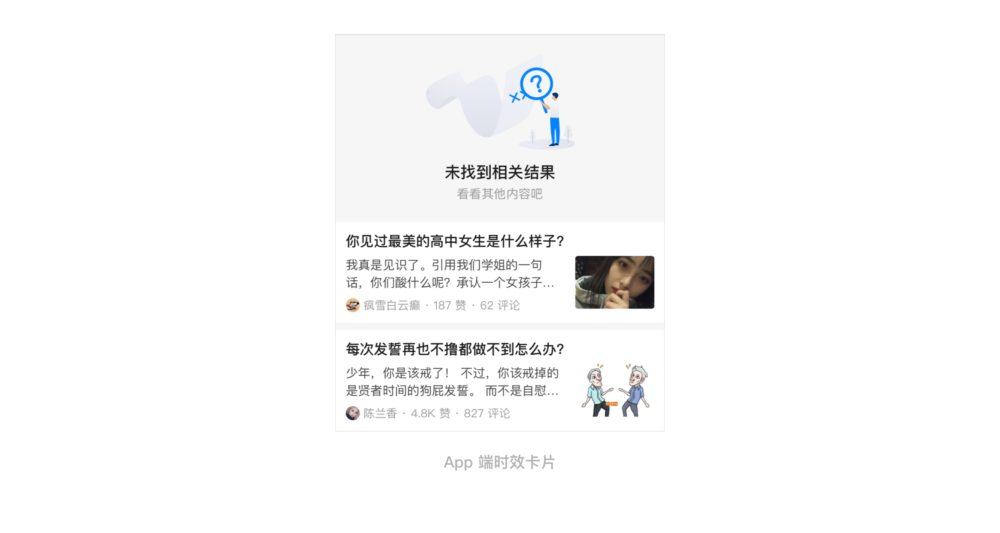

搜索功能因为算法及排序能力等技术问题，无法很好地满足用户对于查找感兴趣内容的基本需求，同时对于一些有代表性的内容消费需求也无法通过简单的搜索召回来满足。因此，团队打算通过运营内容，对一些有代表性的、需求量大的搜索关键词类别进行特型展示，满足用户对不同类型内容的需求。
通过分析研究搜索关键词的频率以及消费时长，我们总结出了几种典型的用户经常检索的内容，即社会/时事热点 (Top 500 的 Query 中有 18% 是热点需求)、百科内容（心理学、鹿晗、iPhone）、最新内容（~160w 搜索量，目前搜索结果是按照标题召回，但同一个标题下可以对应多个不同时间的回答）、被屏蔽的敏感内容 (~45w 搜索量)等。
社会/时事热点 - 用户希望快速的了解具体发生了什么以及知乎其他用户对于这件事情的评价。因此，设计应该包含对于热点事件的介绍，以及充分的展示各方评价及观点；
百科内容 - 用户会希望系统的学习某个领域、了解一个人或产品。鉴于此类 Query 的颗粒度较大、包含内容较多，因此设计应当以一种结构明确、条理清晰的方式展示该领域的内容，方便用户进行内容的筛选；
最新内容 - 用户需要了解关于某事/某人/某产品最近发生的一些内容更新。设计上应该做到允许用户能够快速的检索到问题下的最新回答或动态；
被屏蔽的敏感内容 - 用户希望能够看到一些刺激的、新奇的涉黄或涉政的内容，从而满足好奇心。设计应当尝试通过某种方式/内容来转移此类用户的注意力，适当满足他们的猎奇心理。
小热点卡片
对时下热⻔事件，运营筛选出与之紧密关联的内容进⾏集中展示，⽅便⽤户对于内容的消费；当 Query 与热点内容强相关时，卡片排列在搜索结果列表第一位，弱相关时排列在第六位/第二屏并进行缩略展示；
上线效果：小热点卡片整体点击 CTR 约为 45%
百科卡片
为⽅便⽤户对于百科类词条内容专业地、系统地学习，对百科内容进⾏结构化的系统展示，方便用户循序渐进的了解；卡片排列在搜索结果列表第一位；
上线效果：小热点卡片整体点击 CTR 约为 35%
时效性卡片
弥补算法对于时效性内容权重调权能⼒的不⾜，将⼀周内有更新，且热度上升较快的内容进⾏集中展示，并排列在第四位，即第一屏露出标题；
上线效果：小热点卡片整体点击 CTR 约为 8%
敏感匹配相关内容
针对⼀些涉政涉⻩的关键词，进⾏搜索结果屏蔽的同时，给⽤户推荐⼀些诸如「历史」和「爆照」的相 关内容，转化⽤户消费⾏为;
当前进度：开发中
